User Interface
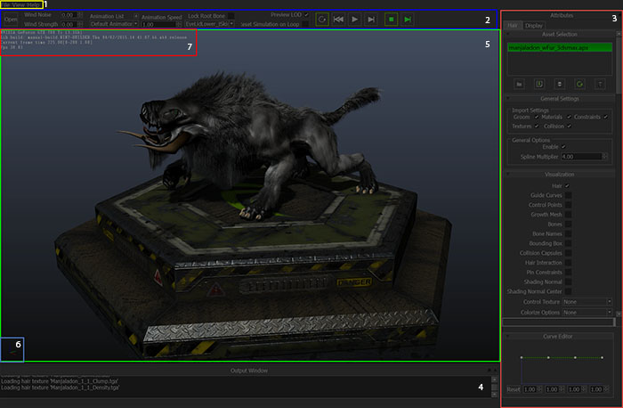
Layout
- 1: Menu bar
- 2: Toolbar The Toolbar has animation controls and other controls that are commonly used for iterating on a project scene wide.
- 3: Attributes Panel The Attributes Panel contains everything that is settable in the scene on a per object level. It is divided into a Hair tab for hair specific attributes and visualizers, and a Display tab for scene visualizers, toggles, and display mesh management. The Attributes Panel is dockable.
- 4: Output Window The Output Window is dockable.
- 5: Viewport
- 6: Axis Indicator Indicates the world axis of the scene
- 7: Heads Up Display The Heads Up Display(HUD) contains many different statistics that are essential in tuning hair.
Texture Input Buttons
Throughout HairWorks Viewer there is a series of icons that pertain to texture inputs like density, root color, or background images. These buttons all have the same functionality through the user interface.
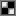 Open File Texture Opens a file dialogue to load a file texture
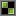 Reopen File Texture Texture is currently loaded. Hover over the icon to get a tool tip with the loaded file path. Clicking the button opens a file dialog to load a different file texture.
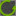 Reload File Texture Reload a file texture if one is already loaded.
Remove File Texture Remove a file texture.
Curve Editor
In addition to texture icons, some options will have a curve editor icon.
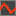 Edit Curve Opens the Curve Editor at the bottom of the Attributes Panel.
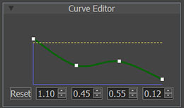
Adjusts the multiplier for the hair from the root(left) to the tip(right). The position along the horizontal access cannot be changed.
Hair Tab
The Hair tab contains all of the attributes, visualizers, and file management to iterate quickly on hair assets.
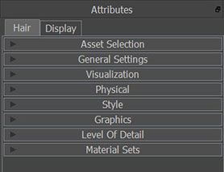
If an asterisk(*) appears next to the title of a field, that field is no longer set to its default value or state.
Values typically range from 0 to 1. This helps provide predictable results. There are a few exceptions, including mass, inertia limit, density, clumping roundness, shininess, glint values, LOD values, shadow attenuation, and wave frequency. These larger ranges may aid in precision or in some cases, such as wave frequency, it just allows for a larger input where a limit of 1 is too restricting.
Asset Selection
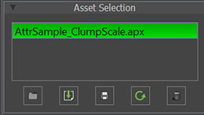
Selected Asset Lists the currently selected asset that all other controls in the Hair Tab apply to. Multiple hair assets can be selected at once and edited at the same time.
If multiple assets are selected simultaneously, some of the fields in the Hair Tab may turn red. This means that the values assigned to the assets are not equal.
Load Asset From File Launches a file dialog to allow the user to open a hair file. Loading a full asset from file
Import File Into Current Asset Launches a file dialog to allow the user to import a hair file into the current asset using the above import options.
Save Current Asset Saves the current hair file.
Reload Current Asset Reloads the currently selected hair file.
Remove Current Asset Removes the currently selected hair asset from the project.
General Settings
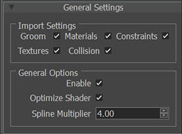
Import Settings A hair file can be loaded in such a way that only specific sections of it are loaded. This is convenient for fast and effective iterations.
- Groom When importing a hair file, determines if the groomed guide curves should be imported or not.
- Materials When importing a hair file, determines if the material attribute settings should be imported or not. This encompasses all rollouts.
- Constraints When importing a hair file, determines if pin constraints should be imported or not.
- Textures When importing a hair file, determines if the texture references should be imported or not.
- Collision When importing a hair file, determines if the collision should be imported or not.
General Options
- Enable Toggles hair assets on/off.
- Spline Multiplier Number of render vertices per line segment of guide hairs. Higher value makes each hair appear smooth, but will slow down rendering.
Visualization
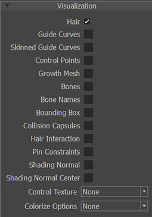
All visualizers apply to the currently selected hair asset.
Hair Display the rendered hair for the currently selected asset.
Guide Curves Display the guide curves for the currently selected asset as red lines.
Skinned Guide Curves Display the guide curves at skinned location (no simulation) for the currently selected asset as yellow lines.
Control Points Display the control vertices for the guide curves on the selected hair asset.
Growth Mesh Display the growth mesh used for the currently selected asset. Sometimes this results in fighting with the display meshes. If necessary, toggle off conflicting display meshes from the Display Meshes section of the Display Tab.
Bones Display bones for the currently selected hair asset.
Bone Names Display bone names for the currently selected hair asset.
Bounding Box Display bounding box for the currently selected hair asset. Yellow bounding box indicates bounds for the growth mesh only and pink bounding box indicates bounds for entire hair.
Collision Capsules Display collision capsules for the currently selected hair asset.
Hair Interaction Display links used for hair interaction. Pink means each interaction link is within original distance; green means interaction links are too stretched (interaction handling is inactive or low)
Pin Constraints Display the pin constraint shape.
Shading Normal Display normals used for shading. Hairworks internally generates surface normal for hair surface. This is useful for matching mesh based shading where hair normals are not defined. Use this option to visualize and adjust hair normals.
Shading Normal Center Display shading normal center bone in grey sphere. This is used to esimate hair normals.
Control Texture When growth mesh is visible, selected control texture is shown on the growth mesh.
Colorize Options Renders the hair strands in different colors depending on what the user is trying to analyze. Options are None, LOD, Tangents, Normals, and Constant Red. For LOD, greener colors indicate closer distance (more detail) and blue color indicates far distance (less detail).
Physical
All attributes apply to the currently selected hair asset.
General
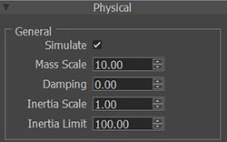
- Simulate Toggle the simulation of the hair on/off.
- Mass Scale Determines the weight of the hair by increasing or decreasing the mass of the hair. This value is always set in meter unit, regardless of what the scene scale is set to.
- Damping The strength of the influence of movement that slows down the fur strands such as air drag or water.
- Inertia Scale When character moves unrealistically fast, hair simulation may produce jerky and wild motion. Use inertia scale to tone down such behavior. No inertia: 0, full inertia motion: 1
- Inertia Limit Defines velocity threshold when inertia scale should become active.
Stiffness
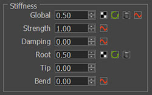
Controls how closely the hair strand stays to its initial groomed position.
- Global The limits on how close each individual hair stays to the skinned position. If a texture map is used, then the texture will influence the stiffness calculation for each simulated (guide) hair.
- Strength The strength of the spring (bounciness) of the hair to return from a simulated position to its resting stiffness. Full springiness is 0, and 1 is no spring.
- Damping The speed of the spring (bounciness) of the hair to return from a simulated position to its resting stiffness. 1: full damping (slowest/no motion), 0: no damping (fastest).
- Root The strength of stiffness that weakens toward the tip of the hair. If a texture map is used, then the texture will influence the stiffness calculation for each simulated (guide) hair.
- Tip The strength of stiffness that weakens toward the root of the hair. If a texture map is used, then the texture will influence the stiffness calculation for each simulated (guide) hair.
- Bend The strength of how hair tries to maintain initial curvy hair shapes.
Collision
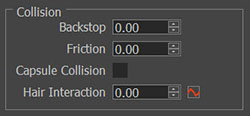
- Backstop Approximates the surface of the growth mesh to use as collision. A value of 0 does not use the solution while a value of 1.0 uses the average edge length of the entire growth mesh to determine an approximation. A side effect of this is that it can artificially fluff up the root of the hairs. This can be desired or undesired.
- Friction Hair to collision shape interaction. Typical values are from 0.0 to 0.1.
- Capsule Collision Enables collision handling against collision shapes if they are present.
- Hair Interaction Helps the hair simulate in groups. 1.0 means full interaction.
Pin
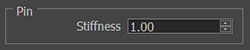
- Stiffness This refers to the strength pin constraint. The center of the pin volume will have strength equal to the Pin Stiffness value, but will falloff in strength to the outer edge of the volume.
Style
All attributes apply to the currently selected hair asset.
Volume
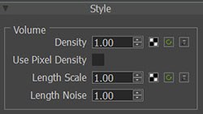
- Density The amount of hair strands produced by interpolation between the guide curves. A value of 0 produces no hair. Currently, a density value of 1.0 produces 64 hairs per each triangle of growth mesh. A value above 1.0 will scale the number of hairs correspondingly (a value of 2 would yield 128 hairs or a value of 10 would have 640). If a texture control is used, then this control becomes a multiplier for the texture. A texture control by default is sampled per vertex in UV space.
- Use Pixel density If a texture map is used to control density, then the texture will influence the density calculation per pixel in UV space instead of the default per vertex. Users should note, however, that using this option may result in a significant performance drop, so this option should be used only when absolutely necessary.
- Length Scale Only grows the hair to a percentage of the full length. A value of 0 is no hair and value of 1 is 100% length. If a texture control is used, then this control becomes a multiplier for the texture. A texture control by default is sampled per vertex in UV space.
- Length Noise The strength of random value noise that is applied to the length of the interpolated hairs resulting in non uniformly interpolated hairs.
Strand Width
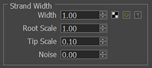
- Width Determines the base width of each hair. All other parameters in this group as well as their textures act as multipliers to this value. This value is always set in millimeters, regardless of what the scene scale is set to.
- Root Scale Multiplier to the width scale that applies toward the root of each individual hair. If a texture map is used, then the sampled texture values per each hair will be multiplied to this constant. The combined value then acts as multiplier to the base scale value.
- Tip Scale Multiplier to the width scale that applies toward the tip of each individual hair. If a texture map is used, then the sampled texture values per each hair will be multiplied to this constant. The combined value then acts as multiplier to the base scale value.
- Noise The strength of random value noise that is applied to the overall width of individual hairs.
Clumping
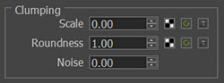
Determines how much each hair follows a clumped shape. Each clump is generated for each growth mesh triangle, and this value controls how much the hair shape is bent toward the center hair. Clumps are defined per vertex.
- Scale The strength of clump that is applied to each individual hair. If a texture map is used, then the sampled texture value per hair will act as a multiplier to this constant value.
- Roundness Determines the roundness of each clump. A value of 0 is a concave clump, a value of 2.0 is a convex clump, and the default value of 1.0 is a neutral clump.
- Noise The strength of the percentage of hairs that are included in each clump.
Waviness
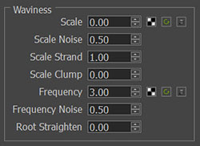
Determines the number of sine waves applied to each individual strand, creating the look of waves or curls.
- Scale Determines the amplitude of the waves. This value is always set in centimeter unit, regardless of what the scene scale is set to.
- Scale Noise The strength of noise that is applied to the scale of each individual hair.
- Scale Strand The strength of the waviness of individual strands. This value is multiplied against the waviness scale.
- Scale Clump The strength of the waviness of clumped strands. This value is multiplied against the waviness scale.
- Frequency Determines the number of waves generated down the length of each individual strand.
- Frequency Noise The strength of noise that is applied to the frequency of each individual hair.
- Root Straighten Determines how much of the root of each individual hair should remain without waves. A value of 0 has no effect. A value of 1.0 makes waves linearly scale up toward the tip, where tip would get the full wave scale, while root will have no waves.
Graphics
Color
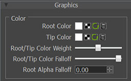
- Root Color The color that is used for the roots of strands. This is determined by loading a texture input and is sampled per hair.
- Tip Color The color that is used for the tips of strands. This is determined by loading a texture input and is sampled per hair.
- Root/Tip Color Weight Balances how much of the Root and Tip color is used along the length strands.
- Root/Tip Color Falloff The blend between the root color and tip color. The Root/Tip Color Weight position is the center of the falloff.
- Root Alpha Falloff Controls the transparency of the root of a strand up to a portion of the strand, but not to the tip.
Strand
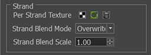
- Per Strand Texture This is a texture that goes along the length of a strand, from root to tip.
- Strand Blend Mode How the Strand Texture blends with the base root/tip colors. Modes include Overwrite, Multiply, Add, and Modulate.
- Strand Blend Scale The strength of the blend. At 0, it is off. At 1.0 the blend is full strength.
Diffuse
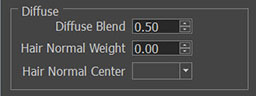
- Diffuse Blend The diffuse blend attempts to match the rendered shading from the hair with the mesh surface’s shading. By setting this value to 1.0, users can ignore hair diffuse term and match mesh lighting more closely. A value of 0.0 will force hair lighting only.
- Hair Normal Weight The strength of the normal derived from the hair normal bone to calculate shading weighted against the diffuse blend. Typically used for long hair.
- Hair Normal Center Selector to pick a bone that is appropriate for the Hair Normal Weight.
Specular
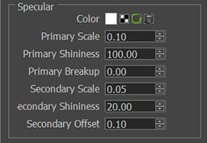
- Color The color that is applied to both primary and secondary specular.
- Primary Scale The strength that the primary specular is applied.
- Primary Shininess How loose or tight the falloff is for primary specular.
- Primary Breakup How wide specular highlight varies based on noise.
- Secondary Scale The strength that the secondary specular is applied.
- Secondary Shininess How loose or tight the falloff is for secondary specular.
- Secondary Offset Offsets the secondary specular term from the primary specular creating separation and two distinct highlight regions. This is part of what makes hair look like hair.
Glint
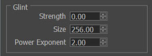
- Strength The amount of the glint that is blended back into the hair.
- Size Determines how much noise is present in the glint.
- Power Exponent The strength of contrast applied to glint.
Shadow
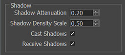
- Shadow Attenuation The strength that shadows are applied to hair.
- Shadow Density Scale For shadow rendering, we can use less, but thicker hairs for performance. This value is used as multiplier on top of density value. Lower values make hair shadow rougher, but make rendering faster. A value of 0.5 is typically a reasonable choice.
- Cast Shadows Enables hair to cast shadows.
- Receive Shadows Enables hair to receive shadows.
Level of Detail
LOD is designed to provide a visually seamless transition between lower and higher details at various distances. There is no concept of stepped or numbered LODs with HairWorks. The power of continuous LOD maintains artistic integrity of the assets fluidity through the LOD regions, creating a more seamless experience and more successfully hiding the detail changes to the end user. These distance values are always set in meter units, regardless of what the scene scale is set to.
- Culling
- These are controls that determine how strands get culled(not rendered) in different ways.
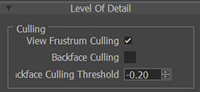
- View Frustrum Culling Culls hairs when they are off screen.
- Backface Culling Enables the hairs to be culled when their associated face is pointing away from the camera. This is based on the Backface Culling Threshold.
- Backface Culling Threshold Threshold that determines the strands that are culled via Backface Culling.
- Continuous Distance LoD
- Allows the hair strands to get wider and reduce density automatically until no hair is drawn at a distance.
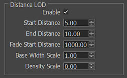
- Enable Allows the user to use or not use Continuous Distance LOD.
- Start Distance The distance from the camera where Continuous Distance LOD begins.
- End Distance The distance from the camera where Continuous Distance LOD ends. At this point no hair is drawn.
- Fade Start Distance The distance from the camera where Continuous Distance LOD starts to become transparent.
- Base Width Scale When Continuous LOD reaches its end distance, the Base Width of the strands interpolates to this value. Typically, this is a larger value than what Base Width is set to in the Physical Material, resulting in larger strands when the camera is further away and density becomes lower.
- Density Scale When Continuous LOD reaches its end distance, the overall Density interpolates to this value. Typically this value is 0, therefore removing all strands when the camera is at far LOD.
- Continuous Detail LoD
- Allows the the hair strands to get thinner and increase in density during close up moments.
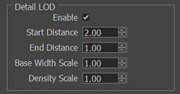
- Enable Allows the user to use or not use Continuous Detail LOD.
- Start Distance The distance from the camera where Continuous Detail LOD begins. for Detail LOD, this distance is further from the camera.
- End Distance The distance from the camera where Continuous Detail LOD ends. For Detail LOD, this is closest to the camera and results fur at its highest density.
- Base Width Scale When Detail LOD reaches its end distance, the Base Width of the strands interpolates to this value. Typically this is a smaller value than what Base Width is set to in the Physical Material, resulting in finer strands when the camera is closer.
- Density Scale When Detail LOD reaches its end distance, the over all Density interpolates to this value. Typically this value is greater than one, there fore creating more fur when the camera is closer.
Control Texture Channels
Many control textures in HairWorks are single channel textures.
It can be thus efficient to pack multiple control textures into a single texture file.
This tab lets individual texture channels control a given attribute. Channel options are Red, Green, Blue, or Alpha.
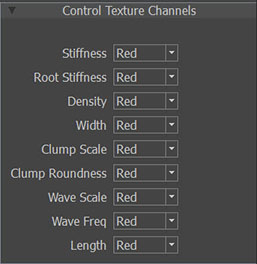
Display Tab
The Display tab contains options for Scene settings, Lights, Display Mesh visibility, and Display Mesh materials. All settings made on this tab are saved with the HairWorks project file.
Some options, such as Handedness, should be set before the scene is loaded for proper asset conversion.
Scene
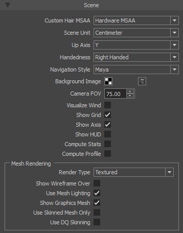
Custom Hair MSAA Determines what type of anti-aliasing to use for previewing assets. Make sure to set this before opening any assets. This does impact performace. Also note, that different anti aliasing solutions can be used depending on the engine integration.
Scene Unit Determines the unit scale that the scene operates in. Make sure to set this before opening any assets.
Up Axis Determines the up axis for the scene. Upon project or fbx load, the viewer will attempt to correctly identify and set the up axis.
Handedness Left- or Right-handed coordinate system. For proper asset conversion, handedness should be set before assets are loaded.
Navigation Style Allows the user to switch between two familiar forms of viewport navigation, Maya and 3dsMax. Also see Keyboard Shortcuts.
Background Image Allows the user to set a custom image in the background of the viewport. This is helpful for seeing your scene in context with your game.
Camera FOV Allows camera field of view (FOV) to be changed (in degrees).
Visualize Wind Toggles on/off the wind indicator in the viewport.
Show Grid Toggles on/off the ground plane grid in the viewport.
Show Axis Toggles on/off the viewport axis in the lower left hand side of the viewport.
Show HUD Toggles on/off some scene statistics via a heads up display in the upper left hand corner of the viewport. Statistics included are current frame time and fps.
Compute Stats When the HUD is toggled on, additional statistics are shown such as hair id, total number of hairs, average hair density, and average hair density per face.
Compute Profile When the HUD is toggled on, additional statistics specific to GPU/CPU rendering and updating are shown..
Mesh Rendering These are scene wide rendering styles that only apply to meshes.
- Render Type This is the style of rendering that the scene is rendered in. Options are Wireframe, Flat(lit with no smoothing), Shaded(lit with smoothing), and Textured(lit with smoothing and textures).
- Show Wireframe Over Overlays a black wireframe on top of the chosen Render Type.
- Use Mesh Lighting Toggles if lighting should be applied to the meshes using the chosen Render Type.
- Show Graphics Mesh Toggles the visibility of all Display Meshes on/off.
- Use Skinned Mesh Only Toggles the visibility of all Display Meshes that are not skinned on/off.
- Use DQ Skinning Toggles the use of dual-quaternion skinning on/off.
Light
Select the active light to be edited. Lights are preset to Key, Fill, Rim, and Environment to light the scene however you like. All four lights are directional.
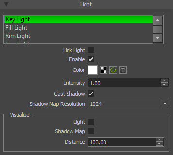
Link Light Enables all lights to be rotated as a group.
Enable Enables the currently selected light.
Color Determines the color of the selected light. The color of the light is also previewed on the visualization shape that represents it. The texture map can be used for environment light sampling.
Intensity The strength of the currently selected light.
Cast Shadow Enables shadows to be cast from the currently selected light.
Shadow Map Resolution Determines the resolution of the shadow to be used in the HairWorks viewer only. The shadow resolution in a game is determined by the games integration.
Visualize These are visualizers that apply to the selected light.
- Light Enables visualization for the selected light.
- Shadow Map Displays the shadow map of the current light over the viewport.
- Distance How far the visualized light is away from origin along its direction.
Display Meshes
This is a list of meshes that is loaded with the FBX file and allows the user to toggle visibility of each object on/off. Meshes can be skinned or static.
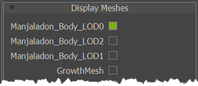
Display Mesh Materials
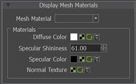
Mesh Material Drop down list of all meshes in the scene. The selected mesh asset contains the settings in the Materials group.
Materials
- Diffuse Color The color applied to the material either by color or texture.
- Specular Shininess How loose or tight the fall off is for specular.
- Specular Color Determines the color to be used for specular high lights either by color or texture.
- Normal Texture Texture input for normal map.